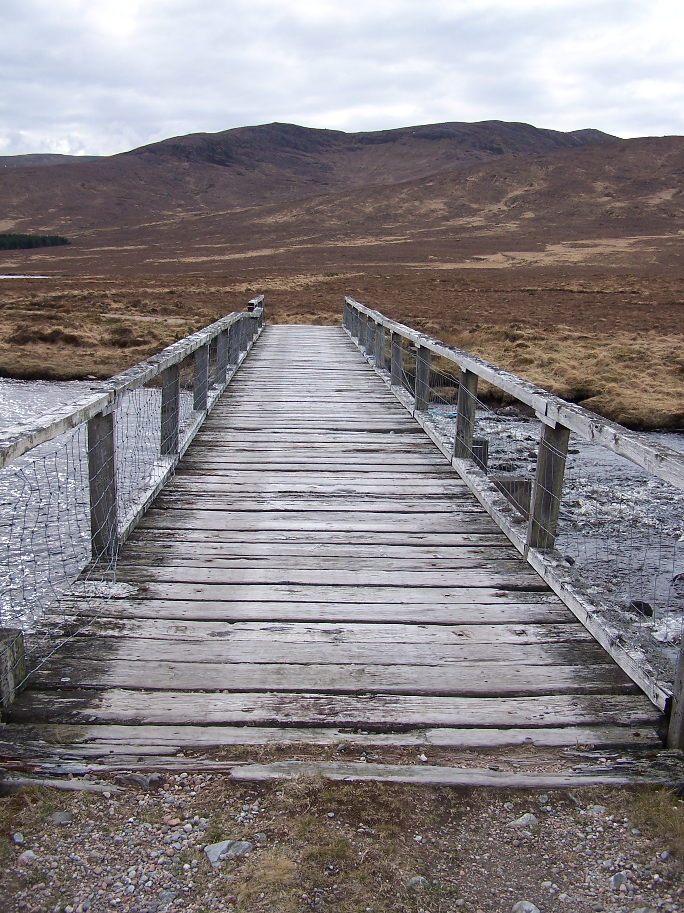

John O'Groats to Lands End Walk 2009
By: John Shelmerdine
A walk of 10 weeks from Dunscansby Head, John O’Groats to Lands End.
Introduction
Whilst
dragging myself up the side of Great Shunner Fell towards Hawes, half
way along the Pennine Way, I came across a thin looking guy. He was walking the
other way and carrying very little. I could tell that he was out
on more than a day hike. The weather that morning and the day before
had been so wet and windy, that the paths were still running as rivers
and the
way itself had suffered landslips. I asked if he was walking the
Pennine Way heading north. He told me that he was, but to my surprise he
added that the Pennine Way was just the middle part of his walk north
to John O’Groats and that he had started some weeks earlier at Lands End. Wow!
This made my walk seem somewhat less grand. The seed was sewn.
I
had already decided that I would buy myself a bicycle from Bob Jackson,
for completing the Pennine Way and that I would plan to cycle from John
O’Groats to Lands End. I completed the PW and I bought the bike and
cycled End to End in September 2007, but in my mind the walk was still
there and had to be done. I knew that this would take more planning and
consideration, with time off work, time away from family, money, and deciding when
and which way to go.
I
completed the walk at Lands End yesterday. What an experience. I would
recommend it to anyone who has the thought and want to walk from end to
end through this great country. To experience the remoteness of the
north, and the open, green countryside of England and the beauty of the
Devon and Cornish Coast. This is an account of my experience.
Making it happen
In
my circumstance I had little choice but to resign from my job. I knew
that to take three months out of work would be too much to ask and I
didn’t want to have to beg or have work commitments determine the
timing of the walk. In short I believe that I would have never got away
to do this walk if I didn’t quit my job. If you are considering the walk you
may have to make a similar decision yourself. In addition I had to make sure
that people around me such as Lorraine - my other half, were ok with my
plans. This wasn’t so difficult as Lorraine was keen for me to fulfil
my dreams. I think that her only worry was me quitting work to do it.

Decision
made, I quit my job, offering the required six months notice in
September 2008, with a mind to start walking at the beginning of April
2009. Now the planning, route decisions and map making had to begin. Using
the OS web site I put together a route that wasn’t too dissimilar to
that offered by Andy McCloy in his book.
The route
I
wanted to stay away from roads, large towns and Cities where at all
possible. Starting from John O’Groats was my first decision. This was
down to a number of factors:
1) Midges. These make Scotland a nightmare from June to August. I didn’t want to walk in a cloud of these guys for a month.
2) Scotland’s Weather. The sun seems to shine in Scotland in April and May. With my fingers crossed this held true.
3)
The best place to end the walk. On the sunny beaches of Cornwall or the
northern most corner of Britain. Hmmm, difficult one.
4)
The Cornish coast path. Known for its steep difficult climbs. Better at
the start when psychologically and physically I’m at my lowest or at
the end where I’ll be days away from finishing and would drag my
twitching lifeless body over the last few miles if need be.
5)
Familiarity. I visit Scotland a lot and as such there are places that I
can set in my mind as familiar milestones. Fort William and Ben Nevis.
Glen Coe and Loch Lomond. These would help me to focus on the short
distance rather that the whole. I find that this helps with the mental
challenge and allows you to enjoy the day. As an example I was thinking
that Fort William was my goal as I walked the northern section of
Scotland. I was seeing this as a two-week walk. I would consider the
next section only from the time that I arrived at Fort William. To help with this I
broke my maps down into these bite sized chunks too.
6)
Home. I live in North Derbyshire. A stone throw from Edale, the end or
start of the Pennine Way. This happens to mean that the walk to home
would be the greater half of the whole challenge. This way when I get
home (another milestone) I can feel that I have broken the back of the
challenge and have less to do to finish it. This would help with the
difficult task of walking on from home.
There are other reasons and after all it is a personal challenge so the decision is with the person who would take it.
The Kit
Having
done some long distance walking before I know that lightweight is
everything. With this in mind I bought the lightest gear I could find
and afford and didn't take things that I wouldn't need.
Montane superlight waterproof jacket.
Montane lighweight fleece jacket.
Rohan lightweight fleece sweater.
Two Trespass T-Shirts, one long sleeve one short.
One pair Rohan walking trousers. Long.
Three pairs Sealskinz socks.
Three pairs Berghaus duds.
Original Mountain Marathon 30 Litre rucksack.
One Platypus 2 litre water bladder.
A Buff
Garmin GPS -useful if you need to be sure where you are on a map (or off a map!)
First Aid Kit
Camera
Note Pad and Pen (Diary)
Mobile phone (includes a radio & pedometer)
Lightweight two Season Sleeping bag + Silk Liner
Terra Nova Gore-Tex Bivy Bag.
Terra Nova Laser Competition Tent.
Basic waterproof over trousers
3/4 length air mattress.
I didn't take any cooking equipment. I would carry a few days food, usually fruitcake and biscuits.
Travel to the Start
Several
options are available for reaching both John O’Groats and Lands End.
For John O’Groats you could choose from flying to Wick, taking the
train
to Wick, hiring a car one way or getting a lift. The cost of
flying is quite high at about £350 from Manchester via Edinburgh.
Hiring a car one way is possible but unless you get it picked up at
extra cost (I have done this) the nearest drop off point is Inverness.
Taking a lift is fine, but not reliable. Its a long drive, and the
driver would have to do it twice.
I chose to travel on the overnight sleeper train operated by Scotrail.
For my own cabin, with a bed, it cost just over £130 to Wick.
The
sleeper train runs from London to Inverness. There is a small but well
operated train from Inverness to Wick. It travels all over the north of
Scotland. From Wick there is a regular bus service that runs to John
O’Groats for just a couple of quid. One other thing Wick does have a
few shops including a Tesco which is about a mile from the train
station, but the bus to John O'Groats does stop there.